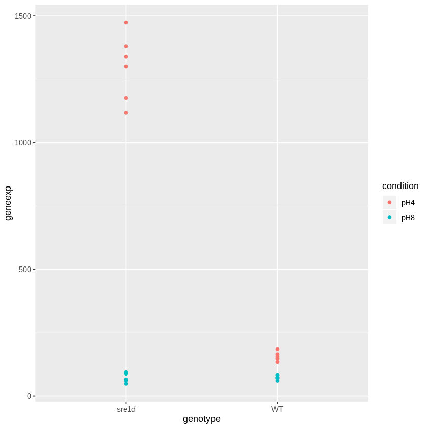

DESeq2: Basic Differential Expression (DE) analysis¶
Objective: Carry out a basic set of DE interaction analysis using DESeq2 and visualize the results¶
The objective is to identify genes whose differential effect due to treatment depends on the genotype
Load packages¶
[1]:
library(tidyverse)
library(DESeq2)
library(dendextend)
library(RColorBrewer)
Registered S3 methods overwritten by 'ggplot2':
method from
[.quosures rlang
c.quosures rlang
print.quosures rlang
── Attaching packages ─────────────────────────────────────── tidyverse 1.2.1 ──
✔ ggplot2 3.1.1 ✔ purrr 0.3.2
✔ tibble 2.1.2 ✔ dplyr 0.8.1
✔ tidyr 0.8.3 ✔ stringr 1.4.0
✔ readr 1.3.1 ✔ forcats 0.4.0
── Conflicts ────────────────────────────────────────── tidyverse_conflicts() ──
✖ dplyr::filter() masks stats::filter()
✖ dplyr::lag() masks stats::lag()
Loading required package: S4Vectors
Loading required package: stats4
Loading required package: BiocGenerics
Loading required package: parallel
Attaching package: ‘BiocGenerics’
The following objects are masked from ‘package:parallel’:
clusterApply, clusterApplyLB, clusterCall, clusterEvalQ,
clusterExport, clusterMap, parApply, parCapply, parLapply,
parLapplyLB, parRapply, parSapply, parSapplyLB
The following objects are masked from ‘package:dplyr’:
combine, intersect, setdiff, union
The following objects are masked from ‘package:stats’:
IQR, mad, sd, var, xtabs
The following objects are masked from ‘package:base’:
anyDuplicated, append, as.data.frame, basename, cbind, colnames,
dirname, do.call, duplicated, eval, evalq, Filter, Find, get, grep,
grepl, intersect, is.unsorted, lapply, Map, mapply, match, mget,
order, paste, pmax, pmax.int, pmin, pmin.int, Position, rank,
rbind, Reduce, rownames, sapply, setdiff, sort, table, tapply,
union, unique, unsplit, which, which.max, which.min
Attaching package: ‘S4Vectors’
The following objects are masked from ‘package:dplyr’:
first, rename
The following object is masked from ‘package:tidyr’:
expand
The following object is masked from ‘package:base’:
expand.grid
Loading required package: IRanges
Attaching package: ‘IRanges’
The following objects are masked from ‘package:dplyr’:
collapse, desc, slice
The following object is masked from ‘package:purrr’:
reduce
Loading required package: GenomicRanges
Loading required package: GenomeInfoDb
Loading required package: SummarizedExperiment
Loading required package: Biobase
Welcome to Bioconductor
Vignettes contain introductory material; view with
'browseVignettes()'. To cite Bioconductor, see
'citation("Biobase")', and for packages 'citation("pkgname")'.
Loading required package: DelayedArray
Loading required package: matrixStats
Attaching package: ‘matrixStats’
The following objects are masked from ‘package:Biobase’:
anyMissing, rowMedians
The following object is masked from ‘package:dplyr’:
count
Loading required package: BiocParallel
Attaching package: ‘DelayedArray’
The following objects are masked from ‘package:matrixStats’:
colMaxs, colMins, colRanges, rowMaxs, rowMins, rowRanges
The following object is masked from ‘package:purrr’:
simplify
The following objects are masked from ‘package:base’:
aperm, apply, rowsum
---------------------
Welcome to dendextend version 1.12.0
Type citation('dendextend') for how to cite the package.
Type browseVignettes(package = 'dendextend') for the package vignette.
The github page is: https://github.com/talgalili/dendextend/
Suggestions and bug-reports can be submitted at: https://github.com/talgalili/dendextend/issues
Or contact: <tal.galili@gmail.com>
To suppress this message use: suppressPackageStartupMessages(library(dendextend))
---------------------
Attaching package: ‘dendextend’
The following object is masked from ‘package:stats’:
cutree
Load the 2019 pilot dds object from image file¶
[2]:
curdir <- "/home/jovyan/work/scratch/analysis_output"
imgdir <- file.path(curdir, "img")
imgfile <- file.path(imgdir, "pilotdds2019.RData")
imgfile
attach(imgfile)
tools::md5sum(imgfile)
### List the objects that have been attached
ls(2)
dds2019 <- dds2019
detach(pos = 2)
'/home/jovyan/work/scratch/analysis_output/img/pilotdds2019.RData'
/home/jovyan/work/scratch/analysis_output/img/pilotdds2019.RData: '6632de5c8a2eed06d8c40c958e6f5d03'
'dds2019'
review the steps of DE analysis¶
Before carrying out an interaction analysis, let’s review the steps for conducting a DE analysis¶
Inspect the dds2019 object¶
[3]:
dds2019
class: DESeqDataSet
dim: 8499 24
metadata(1): version
assays(1): counts
rownames(8499): CNAG_00001 CNAG_00002 ... large_MTrRNA small_MTrRNA
rowData names(0):
colnames(24): 1_2019_P_M1 2_2019_P_M1 ... 23_2019_P_M1 24_2019_P_M1
colData names(22): Label sample_year ... RIN_normal_threshold
RIN_lowered_threshold
The steps for a basic analysis are: estimate size factors, estimate dispersion parameters, and then carry out DE analysis¶
[5]:
### First copy dds2019 to ddsadd
ddsadd <- dds2019
### Estimate Size Factors
ddsadd <- estimateSizeFactors(ddsadd)
### Estimate Dispersion parameters (for each gene)
ddsadd <- estimateDispersions(ddsadd)
### Fit NB MLE model
ddsadd <- DESeq(ddsadd)
### Rlog "normalized" expressions
#rldadd <- rlog(ddsadd, blind = TRUE)
gene-wise dispersion estimates
mean-dispersion relationship
final dispersion estimates
using pre-existing size factors
estimating dispersions
found already estimated dispersions, replacing these
gene-wise dispersion estimates
mean-dispersion relationship
final dispersion estimates
fitting model and testing
Identify differentially expressed genes with respect to condition using pH4 as reference¶
[6]:
results(ddsadd, contrast = c("condition", "pH8", "pH4"), tidy = TRUE) %>%
arrange(desc(-padj)) %>%
head(5)
| row | baseMean | log2FoldChange | lfcSE | stat | pvalue | padj |
|---|---|---|---|---|---|---|
| <chr> | <dbl> | <dbl> | <dbl> | <dbl> | <dbl> | <dbl> |
| CNAG_00275 | 1072.9219 | -4.048106 | 0.10667356 | -37.94854 | 0 | 0 |
| CNAG_00309 | 539.1312 | -3.331524 | 0.08444635 | -39.45137 | 0 | 0 |
| CNAG_00409 | 1093.4775 | -5.030655 | 0.07452918 | -67.49913 | 0 | 0 |
| CNAG_00531 | 15371.8856 | 3.563691 | 0.05663035 | 62.92900 | 0 | 0 |
| CNAG_00601 | 506.4752 | 4.661577 | 0.09625726 | 48.42832 | 0 | 0 |
[7]:
## Interaction analysis
[8]:
### The first step is to specify the design
[9]:
### Additive design
ddsmult <- dds2019
design(ddsmult)
~condition + genotype
Update the design by adding the term genotype:condition
[10]:
design(ddsmult) <- formula(~ genotype + condition + genotype:condition)
design(ddsmult)
~genotype + condition + genotype:condition
[11]:
### Now repeat the steps: estimate size factors, estimate dispersion followed by the analysis
[12]:
### Estimate Size Factors
ddsmult <- estimateSizeFactors(ddsmult)
### Estimate Dispersion parameters (for each gene)
ddsmult <- estimateDispersions(ddsmult)
### Fit NB MLE model
ddsmultres <- DESeq(ddsmult)
### Rlog "normalized" expressions
#rldmult <- rlog(ddsmult, blind = TRUE)
gene-wise dispersion estimates
mean-dispersion relationship
final dispersion estimates
using pre-existing size factors
estimating dispersions
found already estimated dispersions, replacing these
gene-wise dispersion estimates
mean-dispersion relationship
final dispersion estimates
fitting model and testing
Look at the results (compare the first line to that of the DE analysis
[13]:
results(ddsmultres)
log2 fold change (MLE): genotypeWT.conditionpH8
Wald test p-value: genotypeWT.conditionpH8
DataFrame with 8499 rows and 6 columns
baseMean log2FoldChange lfcSE
<numeric> <numeric> <numeric>
CNAG_00001 0 NA NA
CNAG_00002 192.456384076694 -0.103408237109234 0.162208795540166
CNAG_00003 164.990819436254 0.639703164323634 0.158566362520624
CNAG_00004 571.054651467718 -0.149923491484726 0.0875861185206605
CNAG_00005 28.7106195205257 0.38872615882583 0.383575916608188
... ... ... ...
ENSRNA049551942 0 NA NA
ENSRNA049551964 0 NA NA
ENSRNA049551993 0 NA NA
large_MTrRNA 5333.97356461621 0.25675256982063 0.261942681080193
small_MTrRNA 1705.75472334291 1.15038162089038 0.552570647394538
stat pvalue padj
<numeric> <numeric> <numeric>
CNAG_00001 NA NA NA
CNAG_00002 -0.637500801142613 0.523798688279165 0.686004971590578
CNAG_00003 4.03429298720548 5.47669483738396e-05 0.00040044394310704
CNAG_00004 -1.71172662993806 0.0869470586782988 0.188582930952285
CNAG_00005 1.01342691757914 0.310856287600497 0.484502484273056
... ... ... ...
ENSRNA049551942 NA NA NA
ENSRNA049551964 NA NA NA
ENSRNA049551993 NA NA NA
large_MTrRNA 0.980186080259394 0.326994274282426 0.501378918298731
small_MTrRNA 2.08187247425215 0.0373541196234004 0.0979329138148396
List the top 5 hits with respect to adjusted P-value
[14]:
results(ddsmultres, tidy = TRUE) %>%
arrange(desc(-padj)) %>%
head(5)
| row | baseMean | log2FoldChange | lfcSE | stat | pvalue | padj |
|---|---|---|---|---|---|---|
| <chr> | <dbl> | <dbl> | <dbl> | <dbl> | <dbl> | <dbl> |
| CNAG_06237 | 2425.9011 | 1.445970 | 0.06535452 | 22.12503 | 1.815272e-108 | 1.479628e-104 |
| CNAG_01768 | 5493.5145 | -2.012335 | 0.09770819 | -20.59535 | 3.020861e-94 | 1.231152e-90 |
| CNAG_04901 | 475.3418 | -3.273870 | 0.16064794 | -20.37916 | 2.560031e-92 | 6.955603e-89 |
| CNAG_06658 | 2332.5964 | -1.550563 | 0.08436115 | -18.38006 | 1.897740e-75 | 3.867120e-72 |
| CNAG_03518 | 399.4864 | 3.091738 | 0.16854953 | 18.34320 | 3.741012e-75 | 6.098599e-72 |
Visualize the results
[15]:
### Merge gene expression with meta data
myDEplotData <- function(mydds, geneid, mergelab) {
counts(mydds, normalize = TRUE) %>%
as_tibble(rownames="gene") %>%
filter(gene == geneid) %>%
gather(Label, geneexp, -gene) %>%
select(-gene) -> genedat
colData(mydds) %>%
as.data.frame %>%
as_tibble %>%
full_join(genedat, by = mergelab) -> genedat
return(genedat)
}
### Alow for coloring with respect to another factor
myDEplot <- function(mydds, geneid, grpvar, colvar, mergelab) {
mydat <- myDEplotData(mydds, geneid, mergelab)
ggplot(mydat, aes_string(x=grpvar, y = "geneexp", col = colvar))+ geom_point()
}
Compare the DE effect of condition within WT compares to sre1d. This suggests that the DE with respect to condition depends on genotype.
[16]:
myDEplot(ddsmult, "CNAG_03518", "genotype", "condition", "Label")

Exercise: Compare the size factors and dispersion estimates between ddsmult and ddsad¶
Estimate DE effect due to condition given genotype¶
Define a group variable¶
[26]:
ddsgrp <- dds2019
### DESeq2 requires factors
ddsgrp$group <- as.factor(paste0(ddsgrp$condition, ddsgrp$genotype))
ddsgrp$group
- pH4WT
- pH4WT
- pH4WT
- pH4WT
- pH4WT
- pH4WT
- pH4sre1d
- pH4sre1d
- pH4sre1d
- pH4sre1d
- pH4sre1d
- pH4sre1d
- pH8WT
- pH8WT
- pH8WT
- pH8WT
- pH8WT
- pH8WT
- pH8sre1d
- pH8sre1d
- pH8sre1d
- pH8sre1d
- pH8sre1d
- pH8sre1d
Levels:
- 'pH4sre1d'
- 'pH4WT'
- 'pH8sre1d'
- 'pH8WT'
Set design¶
[27]:
design(ddsgrp) <- formula(~group)
ddsgrp@design
~group
[28]:
ddsgrp
### Estimate Size Factors
ddsgrp <- estimateSizeFactors(ddsgrp)
### Estimate Dispersion parameters (for each gene)
ddsgrp <- estimateDispersions(ddsgrp)
### Fit NB MLE model
ddsgrpres <- DESeq(ddsgrp)
### Rlog "normalized" expressions
#rldmult <- rlog(ddsmult, blind = TRUE)
class: DESeqDataSet
dim: 8499 24
metadata(1): version
assays(1): counts
rownames(8499): CNAG_00001 CNAG_00002 ... large_MTrRNA small_MTrRNA
rowData names(0):
colnames(24): 1_2019_P_M1 2_2019_P_M1 ... 23_2019_P_M1 24_2019_P_M1
colData names(22): Label sample_year ... RIN_normal_threshold
RIN_lowered_threshold
gene-wise dispersion estimates
mean-dispersion relationship
final dispersion estimates
using pre-existing size factors
estimating dispersions
found already estimated dispersions, replacing these
gene-wise dispersion estimates
mean-dispersion relationship
final dispersion estimates
fitting model and testing
Generate results for CNAG_03518¶
[31]:
### Results for interaction analysis
r0<-results(ddsgrpres, tidy=TRUE)
### Contrast treatments within WT strain
r1<-results(ddsgrpres, contrast = c("group", "pH8WT", "pH4WT"), tidy=TRUE)
### Contrast treatments within sre1d strain
r2<-results(ddsgrpres, contrast = c("group", "pH8sre1d", "pH4sre1d"), tidy=TRUE)
[33]:
r0 %>% filter(row == "CNAG_03518")
r1 %>% filter(row == "CNAG_03518")
r2 %>% filter(row == "CNAG_03518")
| row | baseMean | log2FoldChange | lfcSE | stat | pvalue | padj |
|---|---|---|---|---|---|---|
| <chr> | <dbl> | <dbl> | <dbl> | <dbl> | <dbl> | <dbl> |
| CNAG_03518 | 399.4864 | -4.15704 | 0.1141264 | -36.42487 | 1.720166e-290 | 3.78948e-288 |
| row | baseMean | log2FoldChange | lfcSE | stat | pvalue | padj |
|---|---|---|---|---|---|---|
| <chr> | <dbl> | <dbl> | <dbl> | <dbl> | <dbl> | <dbl> |
| CNAG_03518 | 399.4864 | -1.106679 | 0.1195981 | -9.253317 | 2.176323e-20 | 9.58358e-20 |
| row | baseMean | log2FoldChange | lfcSE | stat | pvalue | padj |
|---|---|---|---|---|---|---|
| <chr> | <dbl> | <dbl> | <dbl> | <dbl> | <dbl> | <dbl> |
| CNAG_03518 | 399.4864 | -4.198417 | 0.1187655 | -35.35049 | 9.853941e-274 | 1.460354e-271 |
[17]:
sessionInfo()
R version 3.6.0 (2019-04-26)
Platform: x86_64-pc-linux-gnu (64-bit)
Running under: Debian GNU/Linux 9 (stretch)
Matrix products: default
BLAS: /usr/lib/openblas-base/libblas.so.3
LAPACK: /usr/lib/libopenblasp-r0.2.19.so
locale:
[1] LC_CTYPE=en_US.UTF-8 LC_NUMERIC=C
[3] LC_TIME=en_US.UTF-8 LC_COLLATE=en_US.UTF-8
[5] LC_MONETARY=en_US.UTF-8 LC_MESSAGES=en_US.UTF-8
[7] LC_PAPER=en_US.UTF-8 LC_NAME=C
[9] LC_ADDRESS=C LC_TELEPHONE=C
[11] LC_MEASUREMENT=en_US.UTF-8 LC_IDENTIFICATION=C
attached base packages:
[1] parallel stats4 stats graphics grDevices utils datasets
[8] methods base
other attached packages:
[1] RColorBrewer_1.1-2 dendextend_1.12.0
[3] DESeq2_1.24.0 SummarizedExperiment_1.14.0
[5] DelayedArray_0.10.0 BiocParallel_1.18.0
[7] matrixStats_0.54.0 Biobase_2.44.0
[9] GenomicRanges_1.36.0 GenomeInfoDb_1.20.0
[11] IRanges_2.18.1 S4Vectors_0.22.0
[13] BiocGenerics_0.30.0 forcats_0.4.0
[15] stringr_1.4.0 dplyr_0.8.1
[17] purrr_0.3.2 readr_1.3.1
[19] tidyr_0.8.3 tibble_2.1.2
[21] ggplot2_3.1.1 tidyverse_1.2.1
loaded via a namespace (and not attached):
[1] colorspace_1.4-1 IRdisplay_0.7.0 htmlTable_1.13.1
[4] XVector_0.24.0 base64enc_0.1-3 rstudioapi_0.10
[7] bit64_0.9-7 AnnotationDbi_1.46.0 lubridate_1.7.4
[10] xml2_1.2.0 splines_3.6.0 geneplotter_1.62.0
[13] knitr_1.23 zeallot_0.1.0 IRkernel_1.0.1
[16] Formula_1.2-3 jsonlite_1.6 broom_0.5.2
[19] annotate_1.62.0 cluster_2.0.8 compiler_3.6.0
[22] httr_1.4.0 backports_1.1.4 assertthat_0.2.1
[25] Matrix_1.2-17 lazyeval_0.2.2 cli_1.1.0
[28] acepack_1.4.1 htmltools_0.3.6 tools_3.6.0
[31] gtable_0.3.0 glue_1.3.1 GenomeInfoDbData_1.2.1
[34] Rcpp_1.0.1 cellranger_1.1.0 vctrs_0.1.0
[37] nlme_3.1-139 xfun_0.7 rvest_0.3.4
[40] XML_3.98-1.19 zlibbioc_1.30.0 scales_1.0.0
[43] hms_0.4.2 memoise_1.1.0 gridExtra_2.3
[46] rpart_4.1-15 latticeExtra_0.6-28 stringi_1.4.3
[49] RSQLite_2.1.1 genefilter_1.66.0 checkmate_1.9.3
[52] repr_1.0.1 rlang_0.3.4 pkgconfig_2.0.2
[55] bitops_1.0-6 evaluate_0.14 lattice_0.20-38
[58] labeling_0.3 htmlwidgets_1.3 bit_1.1-14
[61] tidyselect_0.2.5 plyr_1.8.4 magrittr_1.5
[64] R6_2.4.0 generics_0.0.2 Hmisc_4.2-0
[67] pbdZMQ_0.3-3 DBI_1.0.0 pillar_1.4.1
[70] haven_2.1.0 foreign_0.8-71 withr_2.1.2
[73] survival_2.44-1.1 RCurl_1.95-4.12 nnet_7.3-12
[76] modelr_0.1.4 crayon_1.3.4 uuid_0.1-2
[79] viridis_0.5.1 locfit_1.5-9.1 grid_3.6.0
[82] readxl_1.3.1 data.table_1.12.2 blob_1.1.1
[85] digest_0.6.19 xtable_1.8-4 munsell_0.5.0
[88] viridisLite_0.3.0